Vector Plot
VCollab Pro users can use the Vector plot option found under Display sub menu to plot vector for CAE vector type results. Using this option, users can identify the direction of force, acceleration, velocity, displacement, etc. for each node.
Note
VCollab Pro saves one user color for vector plot in view point as well as in CAX. Full tensor derived type requires a maximum of 3 user colors.
Steps to use Vector Plot
Click CAE | Display | Vector Plot or use shortcut key Ctrl + V to view the vector plot.
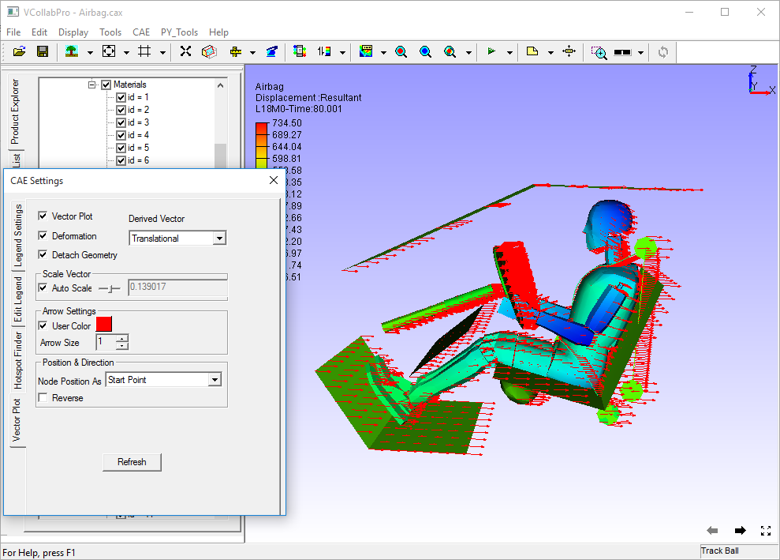
Vectors start from an old nodal position while the model moves with instances. Auto scale allows users to view huge vectors as well as very small changes inside the viewer.
Steps to Modify Vector Plot Setup
Click CAE | CAE Settings and open Vector Plot Settings tab.
By default, Auto Scale is enabled. Uncheck Auto Scale to scale manually using slider control.
Notice the change in vector size.
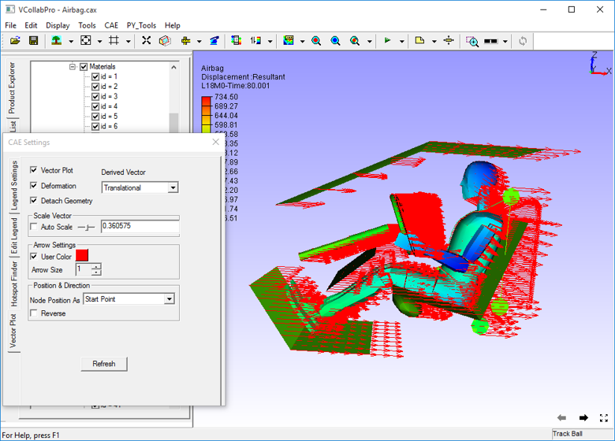
Uncheck the Deformation option to plot the vector without considering deformation of the model.
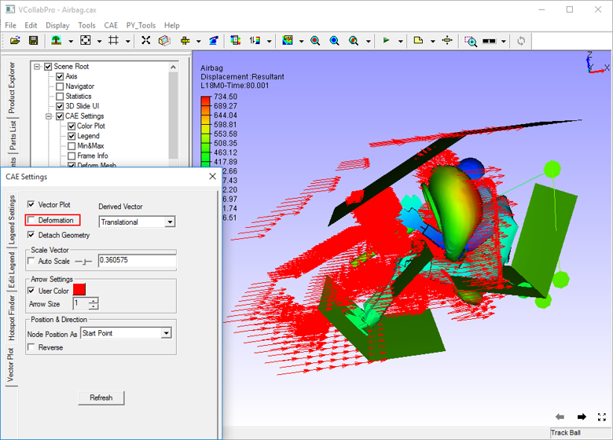
Slider bar is always at the center of the slider (scale value 1).. To scale up, move the slider to the right. The slider bar comes back to the center once the user releases the mouse button.
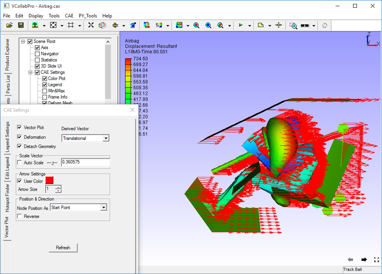
To scale down, move the slider to the left.
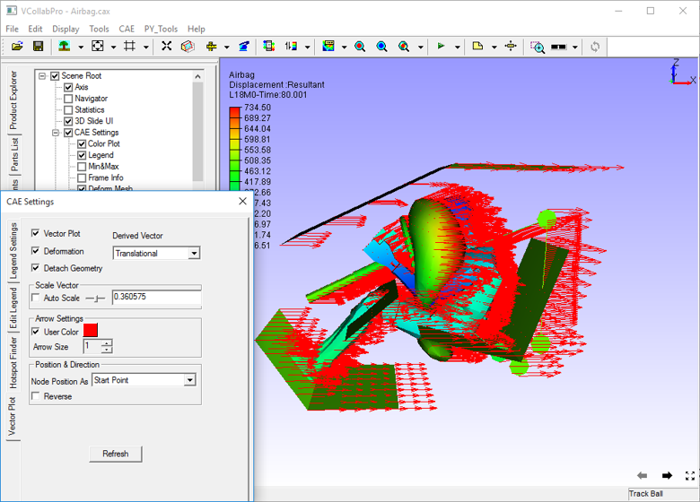
There is no constraint on scaling up or down. An exact value for scaling can also be entered in the edit box next to the slider.
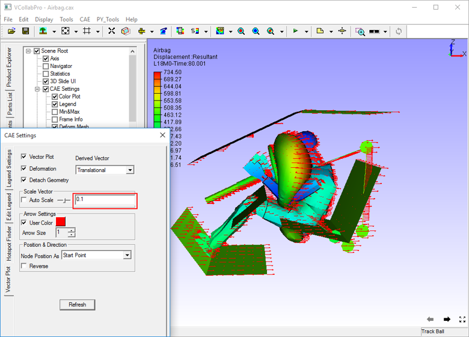
Change the value in the Arrow Size field to increase or decrease the size of the arrow.
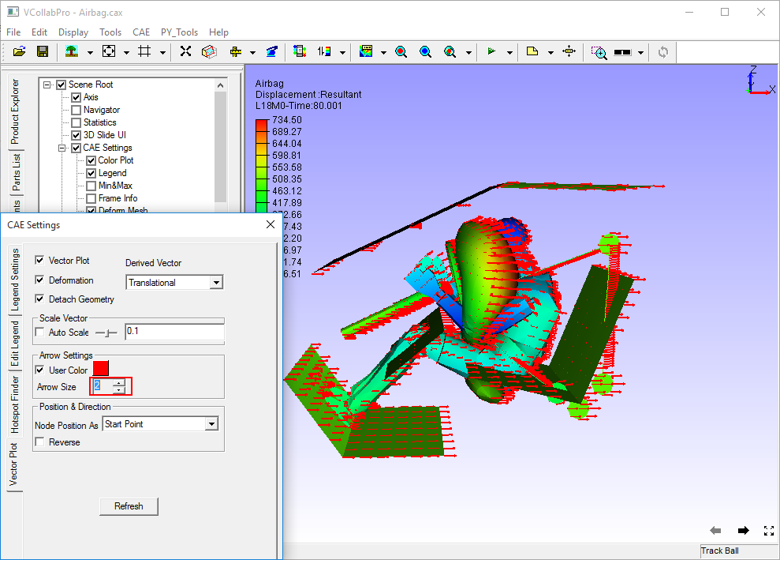
Check User Color option to enable a color box next to the checkbox.
Select the default user color from the color palette and click OK to apply.
Select Nodal Position As either Start Point or End Point. By default, the starting point is enabled.
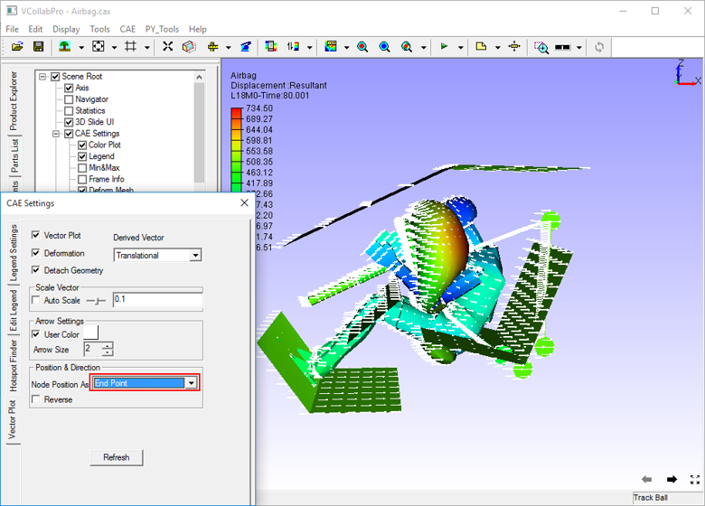
To change the direction of the vector, check the Reverse check box
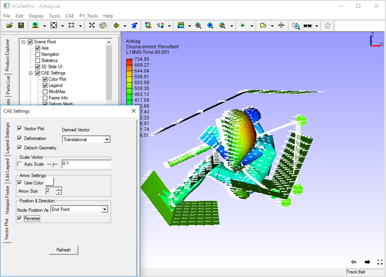
Derived Vectors
Select a tensor result like stress.
Normals will be displayed as vectors
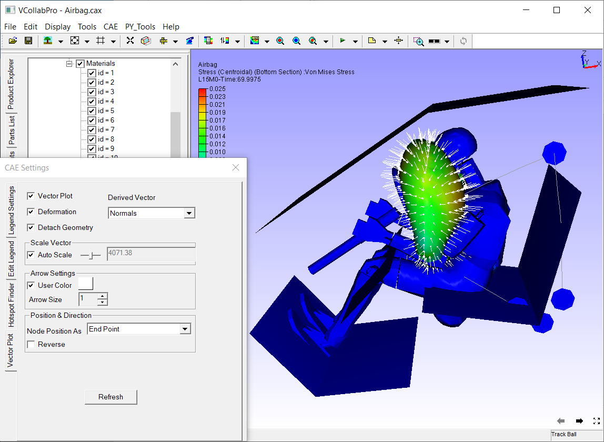
From the derived vector drop down, select any other derived vector type, say Mid Principal Direction.
Select any other derived vector type, say Full Tensor.


Steps for viewing vector plot only for visible parts
Load a CAX file
Click CAE | Display | Vector Plot
Click CAE | CAE Settings.
Select Vector Plot tab.
Check Detach Geometry if it is unchecked.
Hide a part using check boxes in the product tree.
Notice that the vector plot is available even for hidden parts.
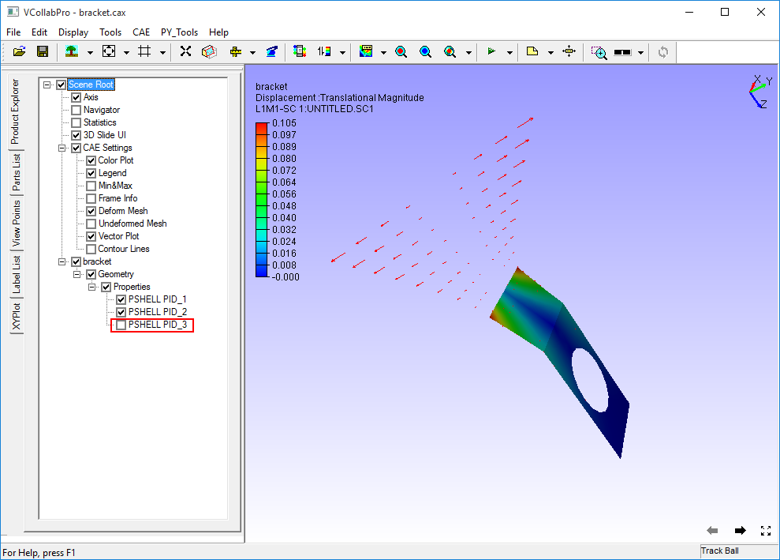
To disable the vector plot for the hidden part, go to CAE Settings dialog.
Uncheck Detach Geometry option in Vector Plot tab.
Now hide a part using the product tree.
Notice that the vector plot is available only for visible parts.